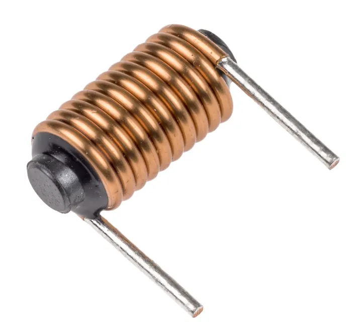
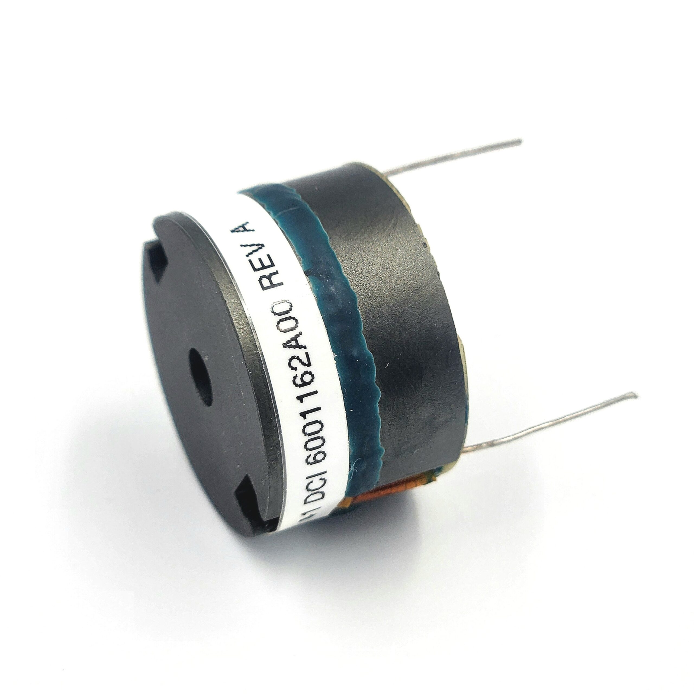
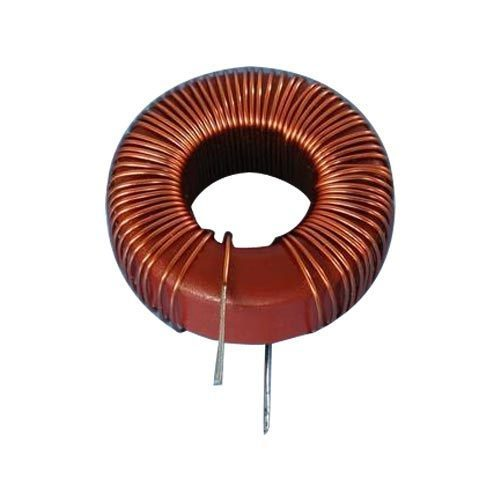
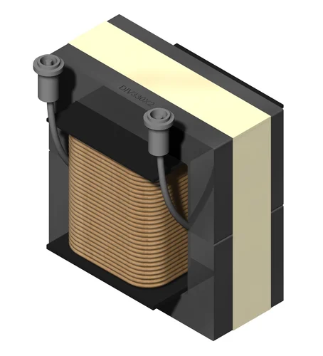
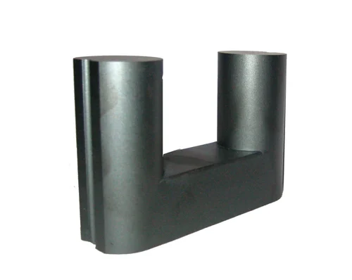

Welcome to ElectroSpecs | Explore Electronics Components | Learn & Build 🚀

ROD TYPE FERRITE CORE INDUCTOR

POT CORE INDUCTOR

TOROIDAL FERRITE CORE INDUCTOR

E-CORE FERRITE INDUCTOR

U-CORE FERRITE INDUCTOR